GaussianGPT：自回归三维高斯场景生成
《GaussianGPT: Towards Autoregressive 3D Gaussian Scene Generation》完整易读学术解析
读前导航
这篇论文解决什么问题
研究对象不是“从若干输入图像重建一个给定场景”，而是从训练分布中生成新的三维高斯对象或室内场景，并让同一模型支持无条件生成、给定局部场景后的 completion，以及超出训练空间范围的 outpainting。作者要验证的核心命题是：三维场景虽然没有天然的一维顺序，但仍可通过结构化 tokenization 交给 GPT 式 next-token prediction。
- 它不是 feed-forward 3D reconstruction。训练数据中的 3D-FRONT Gaussian 先由深度和 Scaffold-GS 优化得到；GaussianGPT 的主任务是学习场景分布并生成新场景。
- 它也不是严格意义的 world model。模型没有 observation–action–transition、奖励或时间 rollout；这里的“自回归”沿空间 token 顺序展开，而不是沿智能体交互时间展开。它可以作为未来三维世界模型的静态场景先验，但论文没有验证控制或决策能力。
完整信息流
flowchart LR A["3D Gaussian scene
position opacity scale rotation color"] --> B["2.5 cm sparse voxel grid
one Gaussian per occupied voxel"] B --> C["Sparse 3D CNN encoder"] C --> D["LFQ discrete latent grid
20 cm latent voxels"] D --> E["xyz serialization"] E --> F["interleaved sequence
p0 f0 p1 f1 ..."] F --> G["Causal GPT
4D RoPE: x y z token-slot"] G --> H["sampled position and feature tokens"] H --> I["LFQ lookup and sparse decoder"] I --> J["generated 3D Gaussian scene"] H --> K["prefix continuation
completion"] H --> L["sliding local windows
large-scene outpainting"]
| 阶段 | 输入 | 输出 | 它解决的瓶颈 |
|---|---|---|---|
| Gaussian 结构化 | 无序连续 Gaussian 集合 | 世界坐标中的稀疏 voxel feature grid | 给无序 primitive 引入空间规则性 |
| 稀疏压缩 | 2.5 cm 基础网格 | 20 cm 离散 latent grid | 把场景缩到 Transformer 上下文可承受的长度 |
| 序列化 | 占用 latent voxels | 位置/特征交错 token | 把稀疏三维结构写成一维因果序列 |
| 自回归建模 | 已有 token 前缀 | 下一位置或下一特征 token | 统一生成、completion 与 outpainting |
| 解码渲染 | 生成的离散 latent | 可实时渲染的 3D Gaussians | 回到显式神经渲染表示 |
读本文前需要掌握的五个概念
- 3D Gaussian primitive：本文把一个 Gaussian 写成中心位置、尺度、旋转、opacity 与颜色；对象实验还使用一阶 spherical harmonics 表达视角相关颜色。
- 稀疏三维卷积：只对占用 voxel 计算特征，不为整个三维包围盒分配密集张量。
- LFQ：Lookup-Free Quantization 用若干二值符号组合成离散 code，不需要传统 VQ 对全部 codebook 向量做最近邻搜索。
- causal Transformer：第 (i) 个 token 只能读取 (t_{<i})，训练用 teacher forcing，推理逐步采样。
- RoPE：通过旋转 query/key 的子空间，让注意力分数编码相对位置。本文把一维序列位置替换为三维 voxel 坐标，并加入 token 类型维。
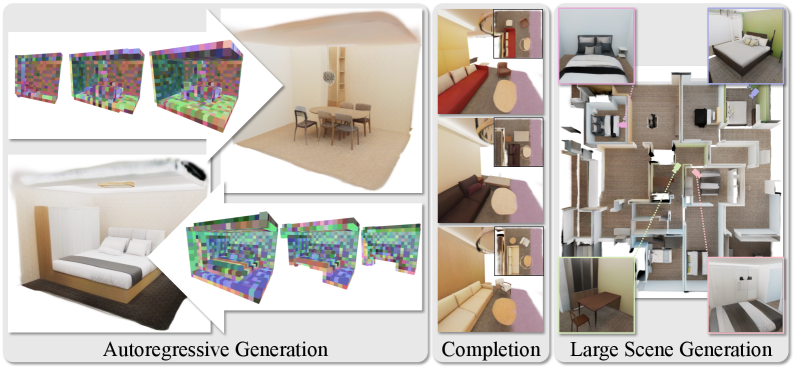
摘要逐项解析
论文内容摘要首先定位现状：近期三维生成主要采用 diffusion 或 flow matching；本文选择一个完全自回归的替代方案。这里的“替代”不是声称扩散失效，而是研究另一种联合分布分解方式。
第二步给出表示问题：GPT 需要离散 token，但 3D Gaussian 是连续、稀疏且无序的 primitive 集合。因此作者先用带 vector quantization 的 sparse 3D convolutional autoencoder，将 geometry 与 appearance 压进离散 latent grid。
第三步给出序列模型：将稀疏 latent voxel 按固定顺序串行化，再用 causal Transformer 和 3D rotary positional embedding 进行 next-token prediction。空间结构不是由序列邻近性单独承担，而是显式进入 attention。
第四步说明推理能力：扩散模型通常对一个完整表示反复整体更新；GaussianGPT 则从前到后构造空间 token。因此任意合法前缀都可以成为条件，completion 与 outpainting 不需要新增 conditioning 网络。
摘要最后把结论限定为“complementary paradigm”：自回归模型提供可控采样、可变生成长度和组合式构造，但论文后续也显示其顺序解码更慢、长时扩展会积累误差。
1. Introduction
本节任务
Introduction 建立一条完整论证链：三维环境需要增量构造 → 现有整体去噪不天然对应这种操作 → 三维数据又缺乏天然序列 → 因而需要同时设计结构化 tokenizer 与空间感知的 autoregressive model。
研究动机与难点
作者将三维生成的应用背景放在沉浸式环境、embodied AI、模拟和内容创作上。与静态对象不同，场景在实际使用中常被扩展、补全和编辑，因此“逐步构造”不是附加功能，而是论文选择自回归分解的直接动机。
困难来自三方面。第一，三维环境同时含几何、外观和语义，且必须保持多视角一致。第二，室内场景既有墙、地板和房间布局等全局规则，又有对象摆放、形状和材质等局部多样性。第三，无序 Gaussian 集合没有类似文本阅读方向的 canonical ordering；若序列化破坏空间关系，普通 GPT 只看到错误的一维邻近性。
作者对现有方法的判断
论文把 L3DG、GaussianAnything、Structured/Native 3D Latents 等近期方法概括为 diffusion 或 flow-based generation：它们可以获得较高视觉质量，但通常把完整表示作为一个整体反复去噪或变换。作者并未证明整体更新不能做 completion，而是指出 prefix continuation 对 autoregressive factorization 更自然。
- 为什么三维场景生成不能直接照搬文本 tokenization？
- 作者选择 autoregressive factorization 的功能性动机是什么？
- 论文的两个贡献分别解决表示问题还是分布建模问题？
2. Related Works
作者没有按年份罗列文献，而是使用三个分类轴：生成表示、生成分解方式、对象到场景的尺度扩展。理解这三条轴，才能准确判断 GaussianGPT 的创新位置。
2.1 3D Representations for Generation
论文内容早期方法使用 voxel occupancy、signed distance field 和 point cloud；mesh 是另一类显式表面表示。NeRF 以连续体渲染获得高保真，但密集沿射线采样带来训练与推理成本。3D Gaussian Splatting 则提供显式 primitive 与快速 rasterization，不过完全无约束的 Gaussian 集合缺乏规则结构，不利于生成建模。
L3DG 的关键前置思想是把 Gaussian 与空间 grid 对齐，引入可卷积的结构。GaussianGPT 继承这类 structured Gaussian parameterization，但不直接在连续 Gaussian 上建生成模型，而是进一步采用 latent-space generation：先压缩、离散化，再学习 latent distribution。
2.2 Autoregressive 3D Generation
作者将生成模型脉络概括为：早期 VAE/GAN → 近期 diffusion/flow matching → 在文本、图像和多模态中成熟的 autoregressive Transformer。自回归分解具有显式 likelihood 训练、渐进生成和灵活条件化的优点，但在三维中仍受 tokenization 与长序列限制。
已有三维自回归工作主要覆盖 MeshGPT、MeshAnything、Meshtron 等 mesh 序列，Octree Transformer 等层次 voxel 序列，以及 MAR-3D、VAR-3D、G3PT 等结构化 token。GaussianGPT 的差异是对同时携带几何和外观、可直接神经渲染的 structured Gaussian latent进行自回归生成，并扩展到完整室内场景。
2.3 From Objects to Scenes
对象生成只需处理有限尺度与单体结构，完整场景还包含长距离依赖、多对象组合、房间布局和物理合理性。相关方法大致分为三类：
- 布局后对象：DiffuScene、ATISS、SceneFormer 先预测结构化 layout，再检索或生成对象。
- 借助二维/视频或基础模型先验：WorldExplorer、Text2Room、WorldGrow、DreamScene、DreamScene360、LayoutGPT 等将强大的外部生成先验用于三维优化或结构监督。
- feed-forward reconstruction：Depth Anything 3、GS-LRM、AnySplat、pixelSplat、MVSplat、Flash3D 从一张或多张观测图像预测场景表示，重点是重建输入所描述的场景，而非学习无条件场景分布。
GaussianGPT 的定位是单一概率模型直接生成三维场景，不依赖预训练二维 diffusion/video prior，也不把任务定义为图像到三维的 reconstruction。代价是训练前必须准备大量已优化 Gaussian 场景，且生成速度受长序列制约。
- 为什么 structured Gaussian 比完全无序 Gaussian 更适合生成建模？
- GaussianGPT 与 MeshGPT 类方法的共同点和表示差异是什么？
- 为什么论文把 feed-forward reconstruction 明确放在相邻但不同的任务类别？
3. Methodology
方法由两个顺序训练的模型组成。第一阶段学习 Gaussian scene 的离散压缩器；第二阶段冻结压缩器，在离散 token 上训练 GPT prior。论文没有端到端联合训练 GPT 与渲染器，因此生成质量的上限首先受 autoencoder reconstruction fidelity 约束。
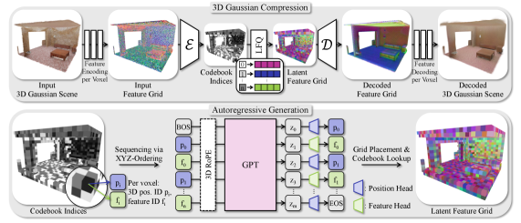
flowchart TB
subgraph Stage1["Stage 1: train scene tokenizer"]
G["Gaussian attributes"] --> V["sparse 3D feature grid"]
V --> E["encoder E"]
E --> Q["LFQ code index"]
Q --> D["decoder D"]
D --> R["rendered reconstruction"]
R --> LAE["RGB + perceptual + occupancy + LFQ losses"]
end
subgraph Stage2["Stage 2: train autoregressive prior"]
Q2["frozen tokenized grids"] --> S["xyz serialization"]
S --> T["p0 f0 p1 f1 ..."]
T --> GPT["causal GPT + 3D RoPE"]
GPT --> CE["next-token cross entropy"]
end
Q --> Q2
3.1 Scene Compression via Sparse 3D Latent Encoding
本节任务：把连续、无序、数量可变的 Gaussian primitives 转为紧凑、离散、仍保留三维坐标的 latent voxels。只有完成这一步，场景才能成为 GPT 的有限词表序列。
Sparse 3D Feature Grid
输入场景包含一组 Gaussian。按论文和配置，它们至少具有以下属性：
| 属性 | 语义与形状 | 内部表示 |
|---|---|---|
| position \(\boldsymbol\mu\) | 世界坐标中的三维中心，形状 \(3\) | 拆成 voxel center 与连续 offset |
| scale \(\mathbf{s}\) | 三个主轴的尺度，形状 \(3\) | 世界空间尺度经 softplus 保持为正 |
| rotation \(\mathbf{q}\) | 四元数，形状 \(4\) | 归一化并统一符号 |
| opacity \(\alpha\) | 一个透明度 logit | 截断到 \([-10,10]\) 后缩放 |
| color / SH | 场景用 RGB/DC；对象另含一阶 SH | RGB 截断到 \([0,1]\) |
作者在世界坐标中建立规则网格，根据 Gaussian 中心把 primitive 分配到 voxel。绝对中心位置不作为 feature 输入，而是用 voxel index 表达粗位置、用相对 voxel center 的 offset 表达亚 voxel 位置。若一个 voxel 内有多个 Gaussian，论文采用随机 subsampling，得到每个占用 voxel 一个 Gaussian 的输入。
官方代码对应：voxelization 与属性 embedding
官方代码model/vqvae/cnn/configurable_vqvae.py:248 先将世界坐标除以基础 grid size 并取整，随后计算连续 offset；每项属性通过独立 linear + residual block，再拼接成稀疏 feature。
# configurable_vqvae.py:248-280
xyz_voxel = (points[PCKeys.COORDS] / self.default_grid_size).round().int()
voxel_coords = torch.cat(
[points[PCKeys.BATCH].unsqueeze(-1), xyz_voxel], dim=-1
).to(torch.int32)
points[PCKeys.COORD_OFFSET] = (
points[PCKeys.COORDS] / self.default_grid_size
- xyz_voxel.to(points[PCKeys.COORDS].dtype)
)默认配置的 grid_size=0.025 m、gaussians_per_voxel=1、make_unique=false。MinkowskiEngine 的 RANDOM_SUBSAMPLE 与论文“同 voxel 随机选一个 Gaussian”一致。
Sparse 3D CNN Encoder–Decoder
拼接后的 sparse feature grid 输入 encoder \(\mathcal E\)。场景模型有三次各轴下采样，每次尺度因子为 2，因此总 stride 为 \(2^3=8\)。基础 voxel 为 \(2.5\,\mathrm{cm}\)，latent voxel 对应 \(2.5\times8=20\,\mathrm{cm}\)。decoder \(\mathcal D\) 逐级上采样，并在中间层预测 occupancy 以裁剪不应存在的 voxel。
配置中的 embedding dimension 与 decoder outer dimension 均为 64，最大通道数 512。Gaussian 各属性先分别扩展为“属性维数 × 16”的 embedding，再拼接进入 sparse CNN；解码后，每项属性使用两个 64-channel residual MLP block 和最终线性层恢复。
分析者解释稀疏卷积保留 translation equivariance：相同局部结构平移到另一 voxel 区域，卷积处理方式相同。这对后续使用相对 chunk 坐标的生成器很重要，因为模型希望在不同房间位置复用局部结构规律。
Vector Quantization：为何使用 LFQ
encoder 输出连续 latent \(\mathbf z\)，随后通过 Lookup-Free Quantization 离散化。论文描述为按符号把编码分量二值化为 0/1，并由二值组合得到 code index。默认 codebook size 为 4096，即 \(4096=2^{12}\)，因此每个 latent voxel 最终对应一个 12-bit 组合所索引的离散 feature token；官方库负责从 64 维 encoder feature 投影到所需的 LFQ code space。
传统 VQ 必须寻找最近的 codebook vector；LFQ 用符号组合隐式定义 code，避免大 codebook nearest-neighbor search，并通过 entropy objective 鼓励不同 code 被充分使用。Appendix F 会显示：传统 VQ 在短训练下略好，但训练约慢三分之一，长训练后差距缩小。
官方代码对应：LFQ 与传统 VQ 分支
# model/vqvae/cnn/minkowski_vq.py:40-54
if self.kind == "lfq":
self.vq = LFQ(
dim=self.dim,
codebook_size=self.codebook_size,
frac_per_sample_entropy=1.0,
soft_clamp_input_value=10.0,
experimental_softplus_entropy_loss=True,
projection_has_bias=False,
)
elif self.kind == "vq":
self.vq = VectorQuantize(
dim=self.dim, codebook_size=self.codebook_size, decay=0.99
)当前公开配置使用 dim=64、codebook_size=4096、单个 feature token。量化器返回离散 index、量化 feature 与 auxiliary loss；decoder 可用 index 直接恢复 latent embedding。
Autoencoder Training
训练监督来自三部分。第一，decoder 输出 Gaussian 后从随机相机重渲染，与目标图像计算 \(L_1\) RGB loss 和 VGG19 perceptual loss。第二，各 decoder upsampling 层预测 occupancy，以 binary cross-entropy 约束稀疏结构。第三，LFQ entropy loss 鼓励 codebook 使用分布，防止大量 code 永远闲置。
| 符号 | 含义 | 作用路径 |
|---|---|---|
| \(\mathcal L_{RGB}\) | 采样视图上的逐像素 \(L_1\) 颜色误差，最终为标量 | renderer → Gaussian 颜色、opacity、几何 → decoder/encoder |
| \(\mathcal L_{perc}\) | VGG19 feature-space perceptual error | 补充像素损失对结构与纹理的感知约束 |
| \(\mathcal L_{occ}\) | 各上采样层 occupancy logit 的 BCE | 决定哪些 sparse voxel 被保留或裁剪 |
| \(\mathcal L_{LFQ}\) | LFQ 的 code usage / entropy 辅助项 | 避免 tokenizer 只使用少量离散 code |
计算顺序是：Gaussian 属性 → sparse encoder → LFQ → sparse decoder → occupancy 与 Gaussian 属性 → differentiable rendering。所有项加权后形成一个标量反向传播。渲染项约束最终可见结果，occupancy 项约束稀疏拓扑，LFQ 项约束离散瓶颈；缺少任一项都可能出现“图像可看但结构膨胀”或“重建尚可但 token 极度塌缩”。
论文内容场景训练使用 \(\lambda_{RGB}=7.5,\lambda_{perc}=0.3,\lambda_{occ}=1.0,\lambda_{LFQ}=0.1\)，每次采样 12 张图；对象训练使用 \(12.5,0.1,1.0,0.1\)，采样 4 张图。softplus 与 \(+5\) 偏移确保 entropy 分支以正值稳定加入总损失。论文没有展开 LFQ 的梯度估计细节；官方 vector-quantize-pytorch 实现负责量化的可微 surrogate。
- 世界坐标位置为什么拆成 voxel index 与 offset？
- 三次下采样如何把 2.5 cm voxel 变为 20 cm latent voxel？
- 重渲染、occupancy 和 LFQ 三类 loss 分别约束什么失败模式？
3.2 Autoregressive Modeling of Latent 3D Grids
本节任务：将量化后的稀疏三维 latent grid 转为满足 causal ordering 的 token sequence，并让 Transformer 既能预测下一个占用位置，也能预测该位置的离散 Gaussian feature。
3D Grid Serialization
作者使用固定 \(xyz\) traversal，其中 \(z\) 是最低有效维：先遍历同一 \((x,y)\) 下的整个竖直高度列，再移动到下一个 \(y\)，最后移动 \(x\)。它不保证一维序列邻近性等于三维邻近性，但规则简单、可解释，而且与按列 outpainting 兼容。
对于边长 \(S\) 的立方 chunk，三维位置 \((x,y,z)\) 被压成：
$$p=xS^2+yS+z,\qquad 0\le p<S^3.$$\(x,y,z\) 是整数 latent voxel 坐标。场景配置 \(S=20\)，因此 position vocabulary 有 \(20^3=8000\) 个位置；对象配置 \(S=32\)，position vocabulary 为 \(32768\)。逆映射依次使用模与整除恢复 \(z,y,x\)。
由于 \(z\) 最低有效，连续 position id 优先沿竖直方向增长。这个选择后来解释了 Appendix C 中沿 \(y\) 扩展比沿 \(x\) 扩展更稳定的方向性差异。
每个占用 latent voxel 形成一个二元组 \((p_i,f_i)\)：\(p_i\) 表示 chunk 内位置，\(f_i\) 是 LFQ code。序列写为
$$[\mathrm{BOS},p_0,f_0,p_1,f_1,\ldots,p_n,f_n,\mathrm{EOS}].$$分析者推导一个 \(20^3\) chunk 最多有 8000 个占用 latent voxel，因此完全占满时需要 16000 个位置/特征 token，再加边界 token，仍低于 16384 context。平均 chunk 约 3.2k latents，即约 6.4k token。这个数值关系直接决定三次下采样是可行配置。
官方代码对应：坐标与 position token 双向映射
# utils/pos_tokens.py:6-20
def threed_to_oned_indices(indices_3d, side_length):
return (
indices_3d[..., 0] * (side_length**2)
+ indices_3d[..., 1] * side_length
+ indices_3d[..., 2]
)
def oned_to_threed_indices(indices_1d, side_length):
z = indices_1d % side_length
y = (indices_1d // side_length) % side_length
x = (indices_1d // (side_length**2)) % side_length
return torch.stack([x, y, z], dim=-1)GaussianVQVAE.tokenize 先返回 latent coordinates 与 LFQ feature ids，再按指定 serialization 排序。公开配置的主模型使用 chunk_order: xyz。
Vocabulary Design
同一 Transformer backbone 处理全部 token，但 position 与 feature 使用不重叠的词表区间，并在交替位置使用不同有效输出集合。position head 的任务是“下一个 occupied voxel 在哪里”，feature head 的任务是“刚才这个 voxel 使用哪个 LFQ code”。
这种分离有两层意义。统计上，它避免几何地址与外观/局部结构 code 竞争同一 index。工程上，position vocabulary 由 chunk 尺寸决定，而 feature vocabulary 由 tokenizer codebook 决定，两者可独立扩展。当前 scene code 的全词表布局为 8000 个 position id、4096 个 feature id，再加 EOS 与 PAD；feature ids 在代码中整体偏移 8000。
官方代码对应：分槽词表屏蔽与位置单调约束
# model/gpt/nanochat_gpt.py:672-700
slot_idx = self._prediction_slot_indices(...)
is_position_slot = slot_idx < self.sparse_num_position_tokens
logits[..., pad_id] = -torch.inf
if is_position_slot.any():
logits[:, is_position_slot, feature_start:feature_end] = -torch.inf
if (~is_position_slot).any():
logits[:, ~is_position_slot, :position_vocab] = -torch.inf
logits[:, ~is_position_slot, eos_id] = -torch.inf因此“position head / feature head”在公开实现中不是两套完整 Transformer，而是共享 hidden state 后，对 logits 做严格 slot mask。推理时还会屏蔽排序上不大于前一个 position 的 id，保证生成位置保持单调、不会重复已生成 voxel。
3D Rotary Positional Encoding
若直接对一维 token index 使用普通 positional encoding，空间上相邻的 voxel 可能因序列化而相隔很远，序列上相邻的 token 也不一定空间接近。作者因此把真实 voxel coordinate 注入 attention，使 query–key 相似度随三维相对位移变化。
\(\mathbf r_i\) 不是序列序号，而是 \((x_i,y_i,z_i,s_i)\)。前三维是 latent voxel 坐标，第四维 \(s_i\) 表示该 token 是 position slot 还是 feature slot。position 与 feature token 虽对应同一 voxel，但第四维不同，因此 attention 可区分“空间位置陈述”和“该位置的内容”。
公开 scene 模型的 embedding dimension 为 1024、16 个 attention heads，因此每个 head dimension 为 64。四维 RoPE 将旋转频率分配给 \(x,y,z,\text{slot}\) 四个轴；代码中每轴获得 8 个 complex frequency pairs。RoPE 只作用于 query/key，value 不旋转，随后执行 QK normalization。
官方代码对应：从位置 token 构造四维 RoPE index
# model/gpt/nanochat_gpt.py:560-585
position_token_ids = full_tokens.gather(1, slot0_positions)
coords = oned_to_threed_indices(
safe_position_token_ids, self.sparse_rope_side_length
)
slot_idx = slot_idx.unsqueeze(0).expand(batch_size, -1)
return torch.cat([coords, slot_idx.unsqueeze(-1)], dim=-1)rope_config.py 明确规定 sparse + position basis 时维数为 4；BOS 使用 \((-1,-1,-1)\) 坐标。Figure 2 中标为 “3D RoPE”，但代码揭示 token-type 是附加的第四坐标维。
Transformer Architecture
主干是 decoder-only GPT-2 风格模型。scene 模型对应 GPT-2 medium：24 层、1024 hidden dimension、16 个 query heads、16 个 KV heads；object 模型对应 GPT-2 small：12 层、768 hidden、12 heads。scene context 为 16384 token，object context 为 8192。
相对 vanilla GPT-2，论文列出 3D RoPE、query–key normalization、per-layer residual scaling 与 Muon optimizer。公开配置关闭 value embeddings 与 sliding-window attention，所有层使用完整 causal context。MLP 使用 squared ReLU；logits 在 cross-entropy 前用 smooth soft-cap 限制到约 \([-15,15]\)。这些属于官方实现细节，不是论文的主要算法贡献。
Autoregressive Training
\(\mathbf t=(t_1,\ldots,t_T)\) 是一个场景 chunk 的整数 token 序列，\(T\) 随 occupancy 改变；\(\theta\) 是 Transformer 参数。等价地，模型把联合分布分解为 \(p_\theta(\mathbf t)=\prod_i p_\theta(t_i\mid t_{<i})\)。训练输入是真实前缀，target 是右移一位后的真实 token，即 teacher forcing。
每一步只在对应词表上计算概率：position slot 屏蔽 feature ids，feature slot 屏蔽 position ids 和 EOS。EOS 只允许出现在 position slot，避免一个 position token 后突然结束而留下没有 feature 的孤立项。padding target 使用 ignore mask，不进入 loss。
该目标直接优化 token likelihood，不直接看到渲染图像；视觉与几何信息已经由冻结 tokenizer 编码。因此 tokenizer 的不可逆误差不会被 GPT 阶段修复。
Scene Generation and Completion
无条件生成从 BOS 开始，在 position 与 feature slot 间交替采样，直到 EOS 或 context 上限。默认实验使用 temperature \(0.9\) 与 nucleus sampling \(p=0.9\)。temperature 调整 logits 的平坦程度；top-\(p\) 只保留累计概率达到阈值的最小候选集合。
模型结构、权重和 loss 均不改变。由于 \(xyz\) 序列是单调的，论文实验选择沿 \(x\) 方向连续的前 25% 或 50% 场景作为 prefix，保证条件是合法前缀，而不是任意空间 mask。
官方代码对应：按空间范围切 prefix 并继续采样
# complete_chunks.py:400-435
token_rows = full_tokens.view(-1, tokens_per_latent)
pos_tokens = token_rows[:, :num_pos_tokens]
coords = pos_tokens_to_centered_coords(
pos_tokens[rows_for_split], num_pos_tokens, base_side_length
)
split_x = x_vals.min() + fraction * (x_vals.max() - x_vals.min())
keep_rows[rows_for_split] = x_vals <= split_x
prefix_tokens = full_tokens[:prefix_rows * tokens_per_latent]随后 sample_sequence_with_prompt 对 prefix 做一次 prefill，将 KV cache 复制给多个 completion sample，再逐 token 解码。对稀疏场景，生成可在 EOS 处提前停止。
大场景生成则反复移动局部 \(4\,\mathrm m\times4\,\mathrm m\) context window，用已生成列作为新 prefix，继续生成相邻 latent-grid columns。若一列完全为空，作者最多回退重采样 5 次；Appendix C 进一步比较 0、5、15 次 retry。该过程允许生成空间范围超过训练 chunk，但每轮只保持局部上下文，因此远离起点后会积累误差。
作者还利用 position token 的显式几何语义施加约束：屏蔽已经生成或违反顺序的位置；大场景时对空列做有限 tree-search/resampling。这是显式空间 token 相比不可解释 latent sequence 的直接优势。
- 为什么一个 occupied latent voxel 恰好对应两个主 token？
- 3D RoPE 如何修正 xyz 序列不保持空间局部性的问题？
- 为什么 completion 可以不训练单独的条件网络？
- 三次下采样、20³ chunk 与 16384 context 之间有什么数值关系？
4. Experiments
实验按“对象生成 → 场景生成/补全 → 大场景扩展 → 模型消融”展开。主比较对象 L3DG 是 latent 3D Gaussian diffusion。需要注意，作者对 qualitative full-room L3DG 与 quantitative chunked L3DG 采用不同设置；论文明确说明定量比较是在匹配的 3D-FRONT chunk 条件下重新训练两种模型。
4.1 Datasets
PhotoShape
对象级实验沿用 DiffRF/L3DG protocol。PhotoShape 包含 15,576 把 chair，每个对象有 200 个 rendered views，并被规范化到 canonical grid。对象 autoencoder 使用 \(128^3\) 输入离散化、两次下采样，得到 \(32^3\) latent grid；对象保留一阶 spherical harmonics，因此颜色可以随观察方向变化。
canonical normalization 降低了姿态、尺度和场景布局变化，所以 PhotoShape 主要检验“表示 + 自回归 prior 是否能生成高质量单体”，并不能单独证明完整场景建模能力。
3D-FRONT
作者自行构建高质量 Gaussian scene dataset：对每个 3D-FRONT 场景渲染多视图图像与深度，从 depth map 回投影初始化 Gaussian，再用 Scaffold-GS 优化 60k iterations。为了符合 autoencoder 的规则输入域，anchor 与 voxel center 对齐，并限制每个 anchor 只有一个 Gaussian。
按空间范围过滤后剩 4,472 个场景。围绕竖直轴旋转和镜像形成 \(8\times\) augmentation。这个数据集并非原始 3D-FRONT mesh 的直接 tokenization；它已经包含一个昂贵的 Gaussian optimization preprocessing。因此 GaussianGPT 推理虽然直接生成 Gaussian，但训练数据准备并不是 feed-forward。
Aria Synthetic Environments (ASE)
ASE Gaussian 来自 SceneSplat++，共 25,000 个室内场景，覆盖更丰富的 layout、对象组合和外观。作者用 ASE 与 3D-FRONT 共同预训练，再对 3D-FRONT fine-tune；附录的额外结果显示 ASE pretraining 增加生成多样性。
| 数据 | 规模 | 主要用途 | 关键偏置 |
|---|---|---|---|
| PhotoShape | 15,576 chairs；200 views/object | 对象无条件生成 | canonical pose/scale，任务较受控 |
| 3D-FRONT | 4,472 scenes；8× augmentation | 主场景生成、completion 与定量比较 | 合成、轴对齐，Gaussian 经 60k 优化 |
| ASE | 25,000 scenes | 扩大场景预训练分布 | 仍是合成环境 |
4.2 Experimental Setup
Autoencoder Configuration
scene autoencoder 的 base voxel size 为 \(0.025\,\mathrm m\)，三次下采样后 latent voxel size 为 \(0.20\,\mathrm m\)。scene 不建模 view-dependent appearance；object 使用一阶 SH。全部实验 codebook size 为 4096。
scene re-rendering loss 使用 12 个 view，\(\lambda_{RGB}=7.5,\lambda_{perc}=0.3\)；object 使用 4 个 view，权重为 12.5 与 0.1。两类训练均用 \(\lambda_{occ}=1.0,\lambda_{LFQ}=0.1\)。更完整的压缩选择见 Appendix F。
Transformer Configuration
scene 模型为 GPT-2 medium-sized，context 16,384；object 模型为 GPT-2 small-sized，context 8,192。全部主结果使用 temperature \(0.9\) 与 nucleus sampling \(p=0.9\)。论文没有报告对不同 temperature/top-\(p\) 的系统敏感性曲线，因此“可控采样”主要是结构能力陈述，而非完整消融结论。
Training Strategy
scene 训练从固定竖直范围的空间 chunks 中采样，使不同场景的 floor height 对齐。chunk 必须达到最小 occupancy：附录给出的阈值是 autoencoder 0.2、GPT 0.3；最多尝试 10 个候选，否则选 occupancy 最高者。
ASE 的 autoencoder supervision 直接与 ground-truth Gaussians 的 render 比较；3D-FRONT 使用前述预渲染图像。监督像素只保留 GT geometry 判定属于当前 chunk 的区域。对象训练使用完整 shape，不做 chunking。
Optimization and Compute
| 模型 | 优化器 | 硬件/有效 batch | 训练时间 |
|---|---|---|---|
| Scene autoencoder | Adam，LR \(10^{-4}\) | 4× RTX A6000；batch 8 | 约 4 天 |
| PhotoShape autoencoder | Adam，LR \(10^{-4}\) | 4× RTX A6000；batch 24 | 约 2 天 |
| Scene GPT | AdamW + Muon | 4× GH200；batch 64 | 约 1 天 |
| PhotoShape GPT | AdamW + Muon | 4× GH200；batch 64 | 约 4.5 小时 |
| 3D-FRONT fine-tune | 同上 | 同上 | AE 约 1 天；GPT 约 10 小时 |
两种模型都使用 cosine decay 到初始学习率的 10%。这些成本不包括把 3D-FRONT 转为优化 Gaussian 的 60k-iteration preprocessing。
4.3 Shape Synthesis
作者生成 1000 个 chair。FID/KID 在 \(128\times128\) render 上衡量 appearance distribution；COV/MMD 在从生成 Gaussian 提取的 mesh 上采样 2k surface points，再用 Chamfer distance 计算。COV 越高表示生成集合覆盖更多真实样本邻域；MMD 越低表示每个真实样本能找到更接近的生成样本。
Table 1：PhotoShape 无条件生成
| Method | FID ↓ | KID ×10³ ↓ | COV ↑ | MMD ×10³ ↓ |
|---|---|---|---|---|
| π-GAN | 52.71 | 13.64 | 39.92 | 7.387 |
| EG3D | 16.54 | 8.412 | 47.55 | 5.619 |
| DiffRF | 15.95 | 7.935 | 58.93 | 4.416 |
| L3DG | 8.49 | 3.147 | 63.80 | 4.241 |
| GaussianGPT | 5.68 | 1.835 | 67.40 | 4.278 |
相对最强的 L3DG，GaussianGPT 的 FID 降低约 33.1%，KID 降低约 41.7%，COV 增加 3.6 个百分点；MMD 从 4.241 轻微变差到 4.278，差约 0.9%。因此“state-of-the-art”主要由 appearance distribution 与 coverage 支撑，而不是每项几何指标都最优。
论文没有给出多次训练的均值/方差或显著性检验。FID/KID 改善幅度较大，但无法从单表判断训练随机性的贡献；MMD 的极小差异尤其不应被过度解读。
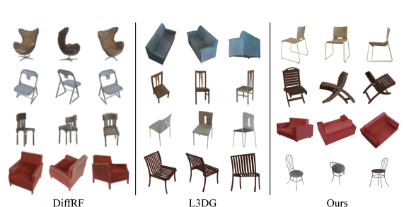
4.4 Scene Synthesis
场景实验包含三种任务：从空前缀生成一个 \(4\,\mathrm m\) chunk；从沿 \(x\) 的 25%/50% prefix 补全剩余 chunk；通过移动局部 context 生成 \(12\,\mathrm m\times12\,\mathrm m\) 场景。

Evaluation Protocol
定量比较把 GaussianGPT 与重新训练的 chunked L3DG 放在相同 3D-FRONT spatial setting。无条件 generation 使用 1000 个生成 chunk 与 1000 个 held-out GT chunk；completion 使用 200 个 GT chunk，每个条件采样 5 个 completion。
| 维度 | 指标与数据 | 能说明什么 | 不能说明什么 |
|---|---|---|---|
| Appearance | 水平 orbit render，\(256^2\)，FID/KID | 二维可见外观分布 | 不可直接证明三维几何正确 |
| Geometry | Gaussian center 采样 16k points，COV/MMD | 中心点分布与多样性 | 不是精确 surface/mesh metric |
| Layout | 移除上方 40% Gaussian 后的 top-down depth，FID/KID | 地面层空间布局 | 忽略 ceiling 与部分高度结构 |
| Completion | completion 与对应 GT orbit render 的 CLIP similarity | 语义与视觉一致性 | 不等价于逐点几何恢复 |
L3DG completion 使用 RePaint。扩散 baseline 对已知区域仍执行全局去噪步骤，而 GaussianGPT 直接把已知 token 当 prefix。
Qualitative Results
作者认为两种模型均能产生连贯室内结构；GaussianGPT 的 causal prefix 允许任意合法前缀直接延续。Figure 6 显示同一个局部条件可以产生不同家具、墙体延伸和外观，说明模型没有简单复制单一 GT，而是在近似条件分布中采样。
Table 2：场景生成与 completion
| Task / Method | Appearance | Geometry | Layout | Completion | |||
|---|---|---|---|---|---|---|---|
| FID ↓ | KID ↓ | COV ↑ | MMD ↓ | FID ↓ | KID ↓ | CLIP ↑ | |
| Generation | |||||||
| L3DG | 100.98 | 0.095 | 0.692 | 0.096 | 93.84 | 0.092 | — |
| GaussianGPT | 94.85 | 0.084 | 0.548 | 0.118 | 84.14 | 0.077 | — |
| Completion：25% context | |||||||
| L3DG | 109.35 | 0.100 | 0.925 | 0.106 | 112.57 | 0.093 | 0.834 |
| GaussianGPT | 100.06 | 0.084 | 0.879 | 0.089 | 95.60 | 0.068 | 0.841 |
| Completion：50% context | |||||||
| L3DG | 106.54 | 0.096 | 0.940 | 0.084 | 111.71 | 0.092 | 0.843 |
| GaussianGPT | 98.13 | 0.081 | 0.940 | 0.057 | 90.77 | 0.063 | 0.851 |
Quantitative Results
分析者解释这组结果最有力地支持论文的结构性主张：prefix conditioning 与 causal factorization 匹配。它并不能证明 autoregressive model 在无条件场景分布上全面优于 diffusion，因为无条件几何覆盖仍明显较弱。
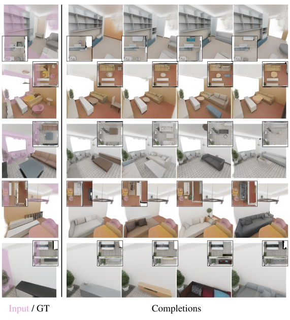
Large Scene Generation
单 chunk 的物理范围为 \(20\times0.20=4\,\mathrm m\)。作者通过滑动局部窗口反复补全 latent columns，生成 \(12\,\mathrm m\times12\,\mathrm m\) 场景。已生成区域成为下一步 context；空列最多重采样 5 次，以避免生成过程过早进入全空区域。
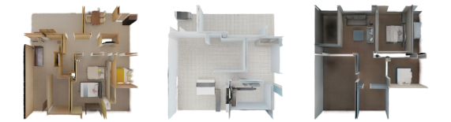
4.5 Autoregressive Modeling Ablations
消融在 ASE + 3D-FRONT 训练设置上进行，其他架构与训练配置固定，报告 epoch 70–74 的平均 train/validation cross-entropy。指标是 token likelihood，不是最终 render quality，因此它直接衡量建模难度，但不能完全替代下游视觉评估。
Serialization Strategies
| Ordering | Train CE ↓ | Val CE ↓ |
|---|---|---|
| Z-order | 2.203 | 2.432 |
| Transposed Z-order | 2.204 | 2.423 |
| Hilbert | 2.347 | 2.439 |
| Transposed Hilbert | 2.334 | 2.434 |
| \(xyz\) (ours) | 2.151 | 2.421 |
Core Model Components
| Setup | Train CE ↓ | Val CE ↓ |
|---|---|---|
| Ours：separate vocab + 3D RoPE | 2.151 | 2.421 |
| Shared vocabulary | 2.157 | 2.449 |
| Learned positional embedding | 2.210 | 2.461 |
| 1D RoPE | 2.227 | 2.446 |
- Table 1 中 GaussianGPT 唯一没有最优的是哪项指标？
- 无条件 scene generation 的视觉质量—几何多样性 trade-off 如何体现？
- 为什么 50% context completion 比 25% context 更有利于 autoregressive formulation？
- Table 3 为什么不能简单推出 serialization 顺序不重要？它只在哪个模型配置下成立？
5. Conclusion
论文结论回到其主要研究问题：vector-quantized Gaussian representation 与三维感知的 structured tokenization，使 sequential next-token prediction 成为三维对象与场景生成的可行范式。相对于整体 diffusion denoising，模型把场景拆成一系列显式空间决策，从而自然获得 prefix completion、逐步 outpainting、temperature 控制和可变生成范围。
证据层面，对象实验在 FID、KID、COV 上取得最佳结果；场景实验显示更好的 appearance 与 layout，completion 尤其受益于已知 prefix；消融验证 separate vocabulary 与 3D RoPE；大场景实验证明生成范围可以超过单 chunk。论文没有证明 autoregressive generation 在所有质量、速度和几何分布指标上优于 diffusion。
Acknowledgements
作者披露的支持包括 MDSI focus topic “Understanding Existing Structures in Building Planning”、MDSI doctoral fellowship、ERC Consolidator Grant Gen3D（101171131）及 Jülich Supercomputing Centre 的 MeshFoundation 计算资源，并感谢 Angela Dai 提供视频配音。
References 的覆盖方式
原论文参考文献表未在本文逐条复制；Section 2 已保留作者用于定位工作的三条分类轴和关键方法。涉及核心技术来源时，本文保留 L3DG、3DGS、LFQ、GPT/RoPE、PhotoShape、3D-FRONT、ASE、RePaint、ScanNet++ 等对应关系。完整 bibliography 请查看原 PDF。
Appendix A. Real-World Results
主实验使用合成、轴对齐场景。本附录将模型 fine-tune 到 ScanNet++ v2，检验真实视觉复杂度、几何噪声、场景差异和缺少全局墙地轴对齐时是否仍可工作。
Training Details
作者使用 SceneSplat++ 优化的 ScanNet++ Gaussians，共 895 个场景，90% 用于训练，并继续采用 8× rotation/flip augmentation。即便如此，真实训练集仍远小于 ASE + 3D-FRONT。
autoencoder 使用官方 DSLR images，以 half resolution 做 chunked fine-tuning 100 epochs，约 1 天；GPT 在新 latent grids 上 fine-tune 250 epochs，约 7.5 小时。
Completion Results
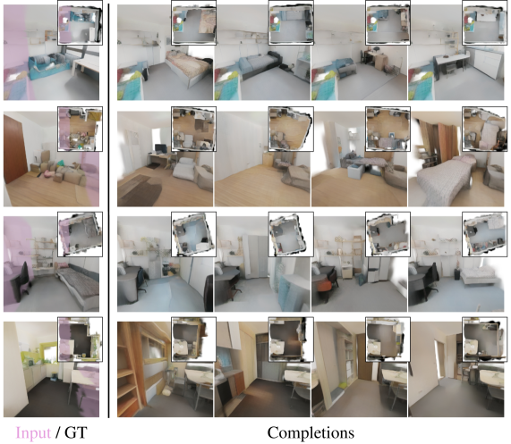
Limitations
Future Work
作者提出提高重建 fidelity，并在 partial real-world scans 中显式建模 uncertainty。自回归分解允许把不确定位置 mask 掉，再基于已知 prefix 对缺失区域采样；这是论文认为 AR 在真实数据上可能具有额外优势的原因，但尚未通过定量实验验证。
Appendix B. Inference Efficiency Analysis
作者在单张 A100 上对每个 chunk 测量 wall-clock 与 peak GPU memory，100 个样本报告均值和 runtime 标准差。为了比较基础 sampler，GaussianGPT 关闭 resampling，L3DG completion 关闭 backward repainting。
Table 5：推理效率
| Task | Approach | Wall-clock | Peak memory |
|---|---|---|---|
| Unconditional | L3DG | 23.8 ± 0.07 s | 1.55 GB |
| Unconditional | GaussianGPT | 78.1 ± 15.8 s | 5.04 GB |
| 25% context | L3DG | 24.0 ± 0.18 s | 1.59 GB |
| 25% context | GaussianGPT | 54.5 ± 13.8 s | 5.24 GB |
| 50% context | L3DG | 24.1 ± 0.14 s | 1.60 GB |
| 50% context | GaussianGPT | 38.9 ± 12.4 s | 5.46 GB |
作者列出的加速方向包括 Flash-Decoding、speculative decoding、MEDUSA 式多 token 辅助 heads、稀疏/局部 attention，以及更强的 hierarchical/adaptive tokenization。它们是未来方案，不是本文已验证组件。
Appendix C. Large Scene Generation
大场景不是把 Transformer context 简单扩大到整个 \(12\times12\) m 区域，而是保持训练时的 local coordinate frame，重复执行局部 completion。每个新 column 的 position token 都使用当前 sliding chunk 内的相对坐标。
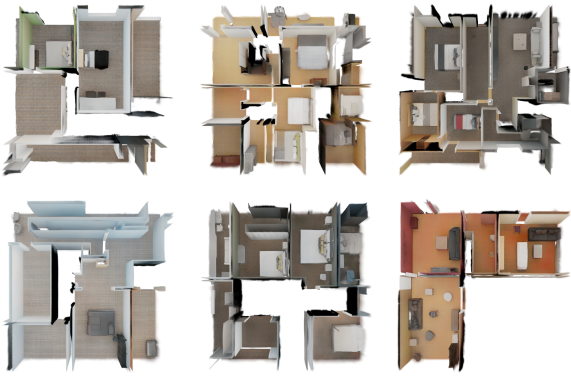
Sampling Efficiency
生成分三阶段：
- 先用单 chunk sampling 产生连续初始 context block；
- 沿 \(x\) 移动窗口，每次 bootstrap 生成 20 个新 columns 的 slice；
- 主 outpainting loop 沿 \(y\) 扩展直到目标范围。
完整 \(12\times12\) m scene 在 GH200 上平均约 6000 s；单个 \(4\times4\) m chunk 约 80 s。完整 KV-cached 单 chunk 可达约 5 columns/s，而大场景因窗口移动无法持续复用 cache，仅约 0.6 columns/s。关闭 resampling 时约快一倍。
Chunk Window Positioning
训练时 target column 可位于 local chunk 的不同位置，因此推理时不必总在窗口最边缘预测。作者最多一次生成 5 个 columns，沿 \(y\) 从 chunk center 附近开始，并把 \(x\) target 放在约 local \(x=5\) 的位置，使未知区域前后都保留部分局部上下文，且窗口分布更接近训练 chunks。
Resampling and Degradation
稀疏训练 chunk 允许空空间，所以 outpainting 可能采样出完全空列；一旦多列连续为空，后续 prefix 会偏离训练分布。作者在空列出现时重试，比较最大 retry 为 0、5、15。5 次是默认的质量—成本折中，15 次进一步推迟退化但更慢。
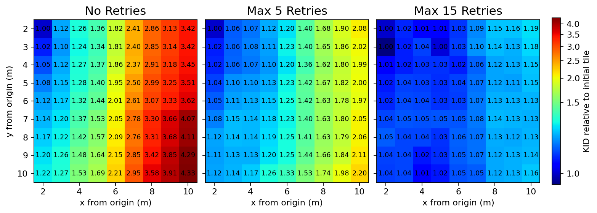
官方代码对应：滑窗 prompt 与空列重采样
官方代码generate_scene.py 把已生成 global columns 重映射到当前 local chunk 坐标，构造 prefix；当目标列为空时，以变化后的 seed/temperature 重采样，达到上限后才接受空列。
# generate_scene.py:1462-1476, 1550-1556
if resample_empty_columns and len(column_rows) == 0:
if group_retry_idx > max_empty_column_retries:
... # keep current suffix
else:
retry_temperature = _temperature_for_retry(
outpainting_temperature, group_retry_idx
)
while len(column_rows) == 0 and retry_idx <= max_empty_column_retries:
retry_temperature = _temperature_for_retry(
outpainting_temperature, retry_idx
)
column_tokens, column_rows = _sample_sparse_column_tokenwise(...)当前公开实现还包含 initial bootstrap、shifted-x bootstrap、一次多列 sampling、position logits constraints、KV-cache 和 early occupancy stop；这些工程分支比主文的“滑窗 + 最多 5 次回退”描述更具体。
Appendix D. Additional Training Details
Chunk Sampling
autoencoder 与 GPT 都从完整场景随机提出空间 chunk。每一步最多尝试 10 个候选；autoencoder 要求 occupancy 至少 0.2，GPT 因 latent grid 更粗而要求至少 0.3。若全部候选不达标，则选择 occupancy 最高者。这个规则避免训练 batch 大量由纯空空间构成，同时没有完全删除稀疏场景。
Camera Sampling
autoencoder 的 re-rendering supervision 必须让相机真正看到当前 chunk。对 3D-FRONT，作者用 depth map 与 chunk bounds 精确计算可见区域：先采样所需数量 8 倍的候选图像，按可见 chunk 面积打分，再按分数采样。这样优先选择 informative views，同时不完全排除其他视角。
ASE 没有同样的精确机制，因此使用投影 chunk bounding box 的屏幕覆盖 heuristic：优先选择至少有 40% chunk coverage 的相机；若不存在，再退回任何有 overlap 的相机。
Encoder and Decoder Heads
每个 Gaussian 属性有独立 encoder head。线性层先把该属性维度扩大 16 倍，再经过保持维度的 residual MLP block；所有属性 embedding 拼接后输入 sparse CNN。decoder 输出 feature vector 后，每个属性由两个 64-channel residual MLP blocks 与最终线性层恢复。
scale、opacity、quaternion、color、coordinate offset，以及需要时的 spherical harmonics 都有独立 head。最终 projection 的 weight 初始化为 0，并设置常量 bias，使初始 Gaussian 具有合理可见性，避免训练一开始全部透明或尺度异常。
Feature Representations
| 属性 | 训练内部空间 | 数值约束目的 |
|---|---|---|
| Scale | world-space size，经 softplus，统一乘 100 | 保证正尺度并与其他 feature 量级接近 |
| Opacity | logit clamp 到 \([-10,10]\)，再除以 10 | 避免极端饱和且稳定回归 |
| Color | SH DC 转 RGB，clamp 到 \([0,1]\) | 让 head 在可解释颜色范围学习 |
| Quaternion | 归一化并标准化符号 | 处理 \(q\) 与 \(-q\) 表示同一旋转的二义性 |
| Offset | 无界 world/grid-relative value | 恢复 voxel 内连续位置 |
这些表示会影响 loss surface，但论文没有对每一种参数化单独做消融；它们主要来自 L3DG 与公开实现的工程经验。
Appendix E. GPT Training Hyperparameters
Transformer 代码建立在 nanochat commit e527521 上，采用按 parameter module 分组的 AdamW 与 Muon。Table 6 的 learning rates 对 object 模型为精确值；scene embedding dimension 从 768 增到 1024 后，标 \(\dagger\) 的 LR 需除以 \(\sqrt{1024/768}\approx1.155\)。
Table 6：GPT 分模块优化参数
| Module | Optimizer | Learning rate | Parameters |
|---|---|---|---|
| Output heads | AdamW | 0.004 \(\dagger\) | \(\beta_1=0.8,\beta_2=0.95\) |
| Embeddings | AdamW | 0.2 \(\dagger\) | \(\beta_1=0.8,\beta_2=0.95\) |
| Residual weights | AdamW | 0.005 | \(\beta_1=0.8,\beta_2=0.95\) |
| Input skip weights | AdamW | 0.5 | \(\beta_1=0.96,\beta_2=0.95\) |
| Others | Muon | 0.02 | \(\beta_2=0.95,n=5\) |
Optimizers
AdamW groups 使用 \(\epsilon=10^{-10}\)，且不使用 weight decay。Muon 中 \(n=5\) 表示 5 次 Newton–Schulz iterations；Nesterov momentum 在前 300 steps 从 0.85 线性增到 0.95。Muon weight decay 对 scene 为 0.025、object 为 0.1，并在训练期间线性衰减到 0。
不同 module 的 LR 跨越 0.004 到 0.5，不能把 Table 6 理解为一个全局 learning rate。高 LR 主要用于低维 scalar/skip 类参数，矩阵主干交给 Muon。
Weight Initialization
token embeddings 从 \(\mathcal N(0,1)\) 初始化，output heads 从 \(\mathcal N(0,10^{-3})\) 初始化。attention projections 与 MLP input layers 在 \(\pm\sqrt{3/d}\) 内均匀初始化；attention/MLP output projections 初始化为 0。residual scalar 初始为 1.0，input-skip scalar 初始为 0.1。
zero output projection 使每个新 block 初始接近 identity residual update，有助于深层 Transformer 的稳定启动。
Appendix F. Autoencoder Ablations
本附录非常关键，因为 GPT 只建模 autoencoder 输出的 token。作者在 held-out 3D-FRONT chunks 上比较重建 render 与 GT mesh render，以 PSNR、SSIM、LPIPS 衡量 fidelity，并报告 latent 数量或 code usage。
Downsampling
下采样越少，重建越好，但 token 数迅速增加：1×、2×、3× 配置平均约 53k、14k、3.2k latent voxels。每个 latent 对应两个 GPT token，因此前两者约需 106k 与 28k token，远超 16,384 context；3× 平均约 6.4k token，最坏完全占用 \(20^3\) 时约 16k，才与主模型兼容。
Codebook Size and Type
codebook 从 1024 增至 4096 或 16384，只带来很小 reconstruction 差异。16384 的 usage 降到 86.4%，说明更大离散容量没有被充分利用。传统 learned-codebook VQ 在 20 epochs 时稍好，但 nearest-neighbor search 使训练时间约增加三分之一；作者最终选择 LFQ 以换取速度和较均衡 usage。
Table 7：Autoencoder 压缩与 tokenizer 消融
| Configuration | PSNR ↑ | SSIM ↑ | LPIPS ↓ | Latents / Usage |
|---|---|---|---|---|
| 1× downsampling | 24.34 | 0.873 | 0.187 | 53k latents |
| 2× downsampling | 23.73 | 0.869 | 0.190 | 14k latents |
| 3× downsampling (ours) | 21.11 | 0.847 | 0.246 | 3.2k latents |
| 1024 CB | 20.93 | 0.846 | 0.250 | 100% usage |
| 4096 CB (ours) | 21.11 | 0.847 | 0.246 | 99.2% usage |
| 16384 CB | 21.37 | 0.848 | 0.245 | 86.4% usage |
| VQ with codebook | 21.59 | 0.850 | 0.226 | 98.4% usage |
| Full training | 25.04 | 0.898 | 0.134 | — |
Appendix G. Chunked L3DG Results
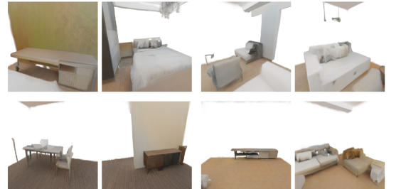
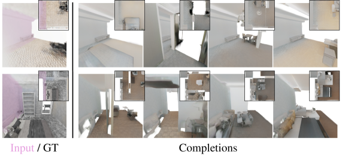
Appendix H. Additional Results
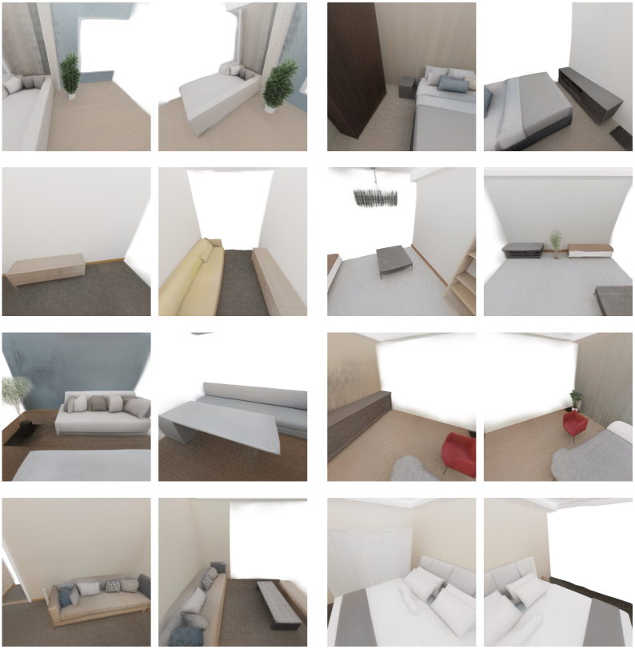
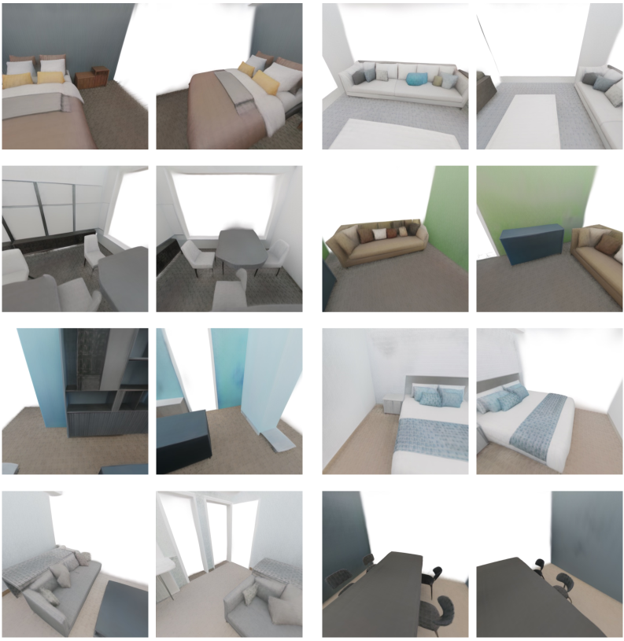
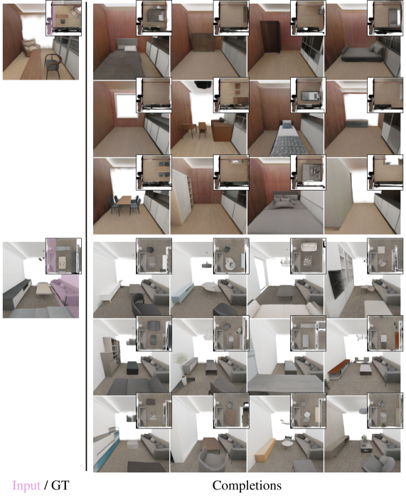
官方代码状态与论文—实现对应
官方代码仓库已完整公开训练、tokenization、无条件 generation、spatial completion、大场景 outpainting、Gaussian decoding 与 rendering；本文核对 commit e3be826eb7e14e298a257e743a91930806c209b6（2026-07-12）。MIT License。作者同时发布 3D-FRONT、3D-FRONT+ASE 和 PhotoShape 的 VQ-VAE/GPT checkpoint。
复现环境基于 CUDA 12.9、PyTorch 2.8、MinkowskiEngine、Flash-Attention、gsplat 与 vector-quantize-pytorch。3D-FRONT 原始官方数据已不可用，README 指向社区重新发布版本；因此代码和 checkpoint 可得，并不意味着所有训练数据可无障碍原样复现。
| 论文组件 | 官方实现 | 关键核对结果 |
|---|---|---|
| Gaussian sparse autoencoder | model/vqvae/cnn/configurable_vqvae.pyconf/model/vqvae_cnn.yaml | 2.5 cm input grid、3-stage downsampling、64-d latent、独立属性 heads |
| LFQ | model/vqvae/cnn/minkowski_vq.py | 4096 codes、entropy loss、可切换传统 VQ |
| xyz tokenization | utils/pos_tokens.pymodel/gaussian_vqvae.py | \(p=xS^2+yS+z\)，position 与 feature 成对 |
| 3D RoPE | model/gpt/rope.pymodel/gpt/nanochat_gpt.py | 稀疏序列实际使用 \((x,y,z,\mathrm{slot})\) 四维 index |
| Separate vocabularies | model/gpt/nanochat_gpt.py | 共享 backbone；logits 按 slot 强制 mask，并约束 position 单调 |
| Completion | complete_chunks.py | 按空间 \(x\) fraction 切合法 prefix，再复用同一 sampler |
| Large-scene outpainting | generate_scene.py | local-window remapping、bootstrap、多列采样、空列 retry、KV-cache |
| Checkpoint / inference | README.md | scene/object checkpoint 与完整 inference entry points 已发布 |
Supplementary Material 状态
项目页和 arXiv source package 未链接独立 supplementary 文件。所有可获得补充内容已经作为 Appendix A–H 并入 35 页 arXiv v2 PDF，因此本项标记为 not-applicable，不是来源缺失。
完整覆盖审计
| 类别 | 原文/台账数量 | 已覆盖 | 不可获得 | 不适用 | 说明 |
|---|---|---|---|---|---|
| Abstract + Sections/Subsections | 56 | 56 | 0 | 0 | 按原顺序覆盖主文、Acknowledgements、References scope 与所有 paragraph-level units |
| Equations/Definitions | 5 | 5 | 0 | 0 | 2 个编号公式；xyz index、3D RoPE、prefix completion 三个结构定义 |
| Figures | 14 | 14 | 0 | 0 | 全部原图已从 LaTeX source 转为本地 PNG 并逐图解释 |
| Tables | 7 | 7 | 0 | 0 | 全部数值重排；论文无独立 Algorithm 环境 |
| Experiments | 12 | 12 | 0 | 0 | 对象、场景、completion、outpainting、效率、真实数据与全部消融 |
| Appendices | 8 | 8 | 0 | 0 | Appendix A–H 全部覆盖 |
| Claims + Limitations | 9 | 9 | 0 | 0 | 2 项显式贡献与 7 项证据支持的边界 |
| Official code mappings | 8 | 8 | 0 | 0 | 核对到 2026-07-12 commit |
| Separate supplement | 1 | 0 | 0 | 1 | 无独立文件；内容已并入附录 |
| 合计 | 120 | 119 | 0 | 1 | 无 pending 或 unavailable 单元 |
来源与证据边界
- 论文事实：arXiv v2 PDF、HTML 和 LaTeX source，提交于 2026-07-01。
- 官方代码：GitHub commit
e3be826e...，用于确认 tensor/token layout、四维 RoPE、词表 mask、completion 与 outpainting 工程流程。 - 分析者解释：包括 token 上限推导、指标边界、相对差值和 world-model/feed-forward reconstruction 的任务定位；均未冒充作者实验结论。
- 未做事项：没有实际重新训练模型或运行 GPU inference，因此不对代码可复现性、checkpoint 数值与论文表格做独立实验复核。